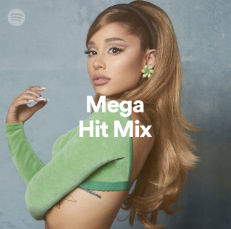
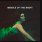
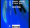
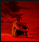
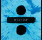

PLAYLIST
Mix by Felipe
Criada por: Felipe Lima . 7 músicas - 21min
Spotify
1.479 curtidas - 21min
seguidores 5
| Título | Artista | Álbum | |||
|---|---|---|---|---|---|
| a Glimpse of Us | Joji | Glimpse of Us | há 5 dias | 3:53 | |
| a Blindind Lights | The Weekend | After Hours | há 5 dias | 3:20 | |
| a Leviating (Baby) | Dua Lipa | Future Nostalgia | há 4 dias | 3:23 | |
| a Bad Habits Midle | Ed Sheeran | With Khalid | há 3 dias | 3:20 | |
| a Drivers Liccense | Olivia Rodrigo | Fine Line | há 2 dias | 2:54 | |
| a Indusstry Babby | Post Malone | Evolve | há 8 dias | 3:50 | |
| a Needd too Know | Alec Benjamin | Planet Her | há 9 dias | 3:45 | |
| a Heeatt Waavess | Jaymes Young | SOUR | há 13 dias | 3:55 |